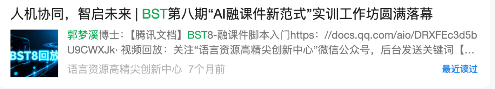

把复杂工具讲清楚
面向一线教师讲过 AI 实训课，也给文科背景研究者做过 Python、Prompt 和 AI 工具链辅导。我的优势不是堆术语，而是把任务拆成老师能马上照着做的步骤。

《看见中国·玉树行动》支教志愿者申请

汉语国际教育专业本科，北京语言大学语言信息处理方向硕士、语言智能与技术专业博士在读。
主要研究方向：教育技术、语言资源建设、计算语言学。
长期参与国际中文智慧教学系统研发，也面向一线教师讲授 AI 辅助备课、提示词设计、习题生成和教学资源改编。
Why me
面向一线教师讲过 AI 实训课，也给文科背景研究者做过 Python、Prompt 和 AI 工具链辅导。我的优势不是堆术语，而是把任务拆成老师能马上照着做的步骤。
本科汉语国际教育，持高中语文教资；硕博阶段做教育数字化和语言资源建设，熟悉备课、出题、作业讲解、资源改编这些真实教学环节。
可在支教结束后留下提示词模板、备课单、练习生成清单和免费资源索引，让当地老师在没有我现场协助时也能继续使用。
岗位匹配
一线教师 AI 实训主讲；长期一对一辅导文科背景学习者。
做过备课、习题生成、资源改编、作业讲解等真实教学流程。
Course plan
课程不按工具堆砌，而是先帮助老师认识 AI，再沿着教师真实教学行为逐步展开：从资源、教案、课件、练习测试，到学情分析、个别辅导、互动工具和可复用工作流。
先讲清 AI、大模型、多模态模型是什么，国内外主流工具有哪些，AI 的能力边界在哪里，帮助老师建立基本判断。
和老师一起梳理教学中的备课、资源、课堂、练习、测试、辅导和复盘环节，讨论真实难点，打开 AI 赋能思路。
从低门槛网页端开始，练习如何把教学需求说清楚，掌握角色、学段、目标、材料、限制和输出格式。
围绕真实课程制作教学资源包，完成教案初稿、课件大纲、多模态素材和课堂活动设计，并训练人工审核。
设计随堂练习、分层作业、小测和讲评方案，让 AI 辅助生成题目、分析错因、整理反馈，但标准答案由教师把关。
用表格和 AI 分析成绩变化、知识薄弱点和学生波动，进一步生成分层支持、个别辅导和家校沟通建议。
介绍 Claude Code、Codex、OpenClaw 等进阶工具，比较它们和网页端对话工具的区别，带老师改造课堂小游戏、动态演示和互动小网页。
讲清 Skill 和 Prompt 的区别，介绍如何寻找、安装和使用已有 Skill，并准备适合小学学科的 Skill，帮助老师把好方法沉淀成可复用流程。
老师现场动手完成一堂课的 AI 教学包，包括教案、课件、练习、互动或辅导方案，并进行展示、交流和讨论。
Evidence
这一部分按科研项目、教学与培训经历分开呈现，尽量完整保留经历本身的内容和成果。
Research & development

国际中文智慧教学系统面向国际中文教育真实教学场景，通过大语言模型、语音智能、数字人等技术赋能，服务教师备课、融课件制作、互动作业、学生作答、多端协作与实时评阅。


Teaching & training


Contact
北京语言大学 · 语言智能与技术博士在读